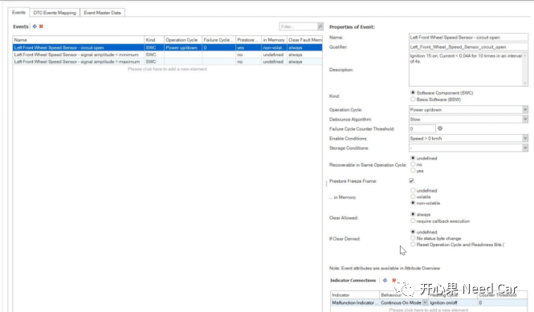
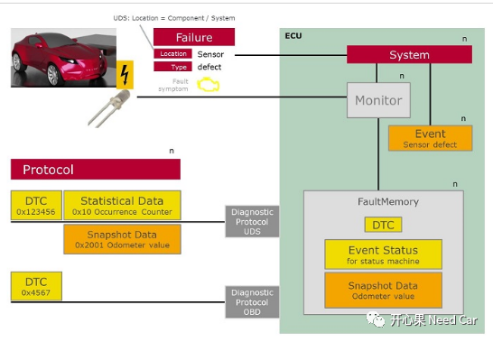
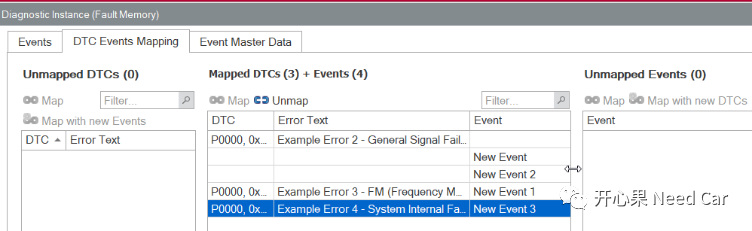
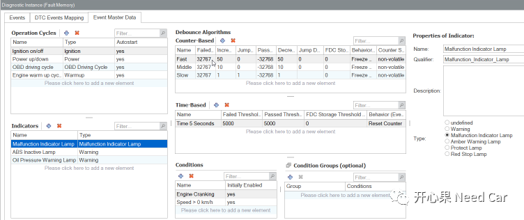

开心果 Need Car · 2022-02-22T12:56:00+08:00 · 微信原文
AUTOSAR中，诊断相关的BSW模块有DCM(Diagnostic Communication Manager)、DEM(Diagnostic Event Manager)、FIM(Function Inhibition Manager)。其中DEM负责处理诊断故障相关的数据。DEM不仅提供故障信息给DCM，也提供接口给应用层和其他BSW模块。上述模块通过对应接口交互时，产生大量诊断信息，这些信息如何处理需要提前定义，而这脱离不了配置工具的使用，本文探讨CANdelaStudio如何支持诊断信息配置。
ECU诊断功能实现时，ECU诊断故障数据存储方式、数据属性定义等对诊断开发至关重要。这些信息均可以使用CANdelaStudio编辑，生成CDD文件。
CANdelaStudio编辑生成的CDD文件可以导入配置工具DaVinci Configurator，不仅简化了DaVinci Configurator配置工作，而且使得项目组成员协同工作更标准化，降低了沟通和维护成本。
CANdelaStudio还支持将CDD文件导出符合AUTOSAR标准的DEXT（Diagnostic Extract Template）文件。DEXT最初在AUTOSAR 4.2.1中发布，用于描述诊断功能交换数据，即ARXML文件。
CANdelaStudio从12.0版本开始，依照AUTOSAR 4.4 DEXT定义，增加了对DEM模块Event数据的配置功能。这样就解决了将CDD或DEXT文件导入配置工具DaVinci Configurator后，一些DEM的配置参数还需要手动配置的问题。新功能使诊断开发者在开发初期，通过编辑CDD文件，就能够建立DTC和对应Event的关系，从而减少手动配置带来的错误，提高开发效率。
在CANdelaStudio中，Events的配置界面在Diagnostic Instance ”Fault Memory”按钮下（黄色闪电⚡），配置界面如下图所示：

主要分为三个部分：Events、DTC Event Mapping、Event Master Data。
在车辆系统中，Monitor监测硬件、通信或者算法等相关故障，当监测到错误时，会上报一个诊断Event，如下图。DEM接收来自SWC或其他BSW(如，CANSM)模块报告的Event，通过检查存储条件决定是否要将该Event对应的故障信息进行存储，因此定义清楚Event的相关属性是基础。

Event定义属性
Kind:Event类型，包括SWC和BSW两种。
Operation Cycle：监测Event开始和结束的条件。
Debounce Algorithm：目前CANdelaStudio只支持DEM去抖，DEM去抖算法包括基于时间去抖和基于计数器去抖。
Failure Cycle Counter Threshold：在ISO 14229-1中也被称作“Trip Counter”，当计数器达到阈值后，DTCStatus字节中的bit3 ConfirmedDTC置1 ，这个阈值定义几个操作循环（Operation Cycle）故障确认。比如：设置阈值为3，某个事件在3个Operation Cycle中均上报过Failed，则bit3 ConfirmedDTC 将置1 。
Enable Conditions：处理Event的预检查条件，如：车速>0km/h与否，诊断电压超限与否。当DEM收到某个Event状态为(pre)Passed或(pre)Failed时，DEM均应先检查Enable Conditions。当条件不满足时，DEM不执行故障信息处理动作。
Storage Conditions：当报告Event状态为Failed时, DEM应检查Storage Condition来判断是否应该存储该Event故障信息，如果条件满足则进一步根据存储策略执行存储动作，反之不存储故障信息。
Recoverable in Same Operation Cycle：当前Operation Cycle中，某Event状态出现过Failed，此时报告Event状态为Passed，此项配置为False时，应忽略报告的Passed结果，保持Failed结果；配置为true时，恢复Failed记录信息。
Prestore Freeze Frame：表示Event发生时，Event相关的Freeze Frame数据是否应该预存储。Event出现甚至还没有完成去抖时，相关的Freeze 数据已经获取并且数据快速变化。
…In Memory: 指Freeze Frame预存储在非易失性存储还是易失性存储。
Clear Allowed：
配置为always，执行清除故障信息请求时，就会清除相关快照数据、扩展数据信息，并且复位DTCStatus状态值；
配置requires callback execution，清除故障信息请求需要通过回调函数实现。
If Clear Denied：执行清除故障信息请求，DTCStatus字节是否会发生变化。
Indicator Connection：定义驾驶员的提示设备，如：发动机故障指示灯。


AUTOSAR定义的Operation Cycle包括：Undefined、Ignition、Warmup、Power、Time、OBD Driving Cycle、Other。
AUTOSAR定义的Indicator包括：undefined、Protect Lamp、Warning、Amber Warning Lamp、Malfunction Indicator Lamp、Red Stop Lamp；
AUTOSAR定义的去抖参数包括（基于Counter）：
基于Counter:Increment/Decrement Step Size、Failed/Passed Threshold等参数；
基于Time:Failed/Passed Threshold、FDC Storage Threshold等参数。
结语
CANdelaStudio作为诊断数据库编辑工具，编辑的CDD文件，可以应用在如下几个方面：
导入代码配置工具DaVinci Configurator，提高诊断开发效率，便于协同维护；
导入CANoe.Diva生成诊断自动化测试用例，节省手动编写测试用例的人力和时间成本；
导入CANoe、Indigo等工具，用作诊断通信数据数据库。
随着CANdelaStudio版本迭代，增加了更多的新特性。比如：CANdelaStudio 12.0版本之后增加了Event编辑功能，这一新增功能扩展了CDD中的诊断数据，使得诊断开发者能够在诊断开发初期，就能够快速建立DTC和对应Event的关系，从而减少手动配置配置工具带来的错误，提高开发效率。
说明：本文主体内容由贤妻完成。
往期精彩回顾